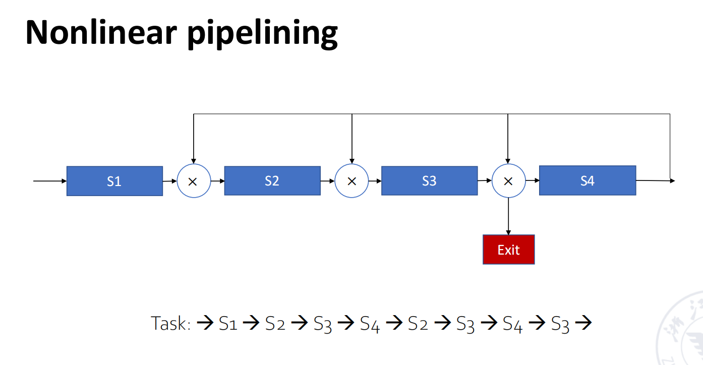
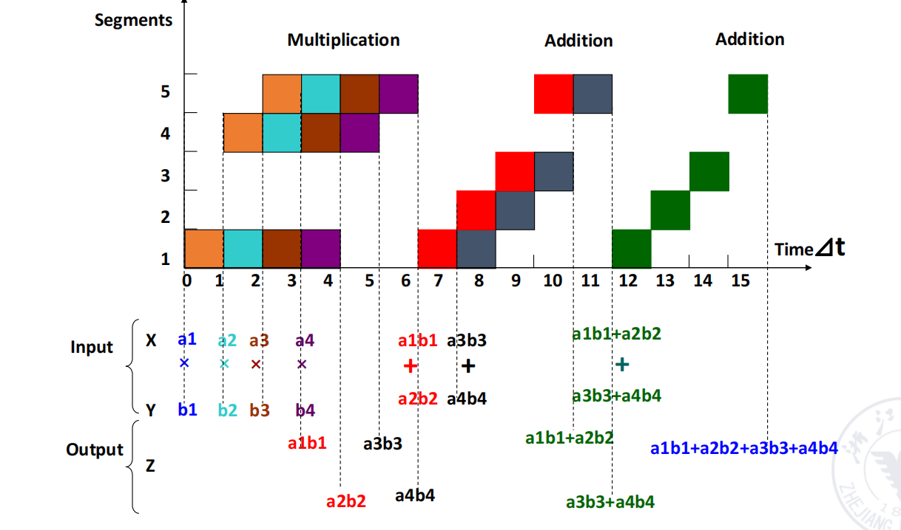
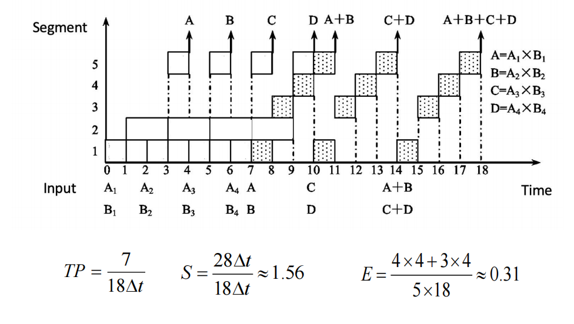
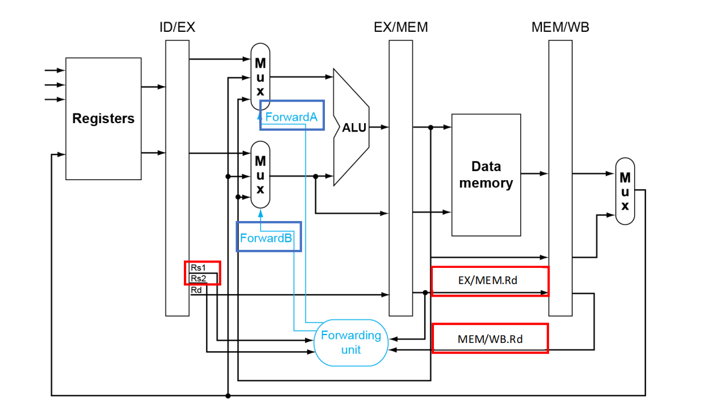
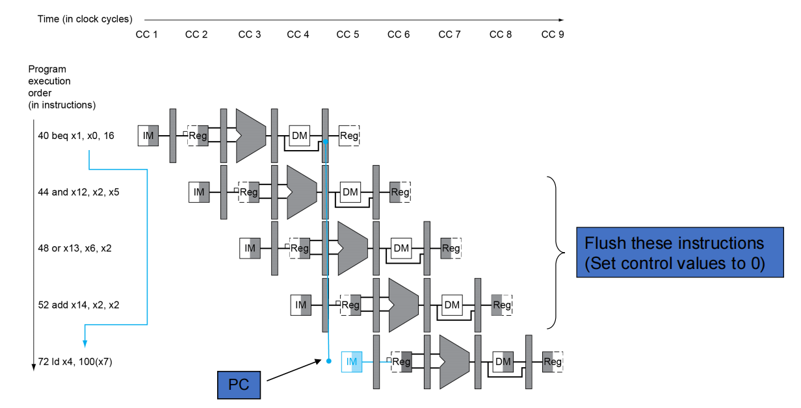
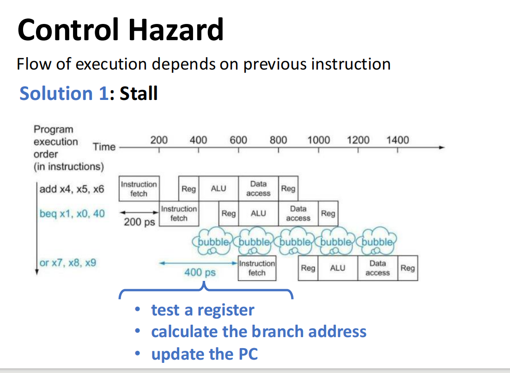
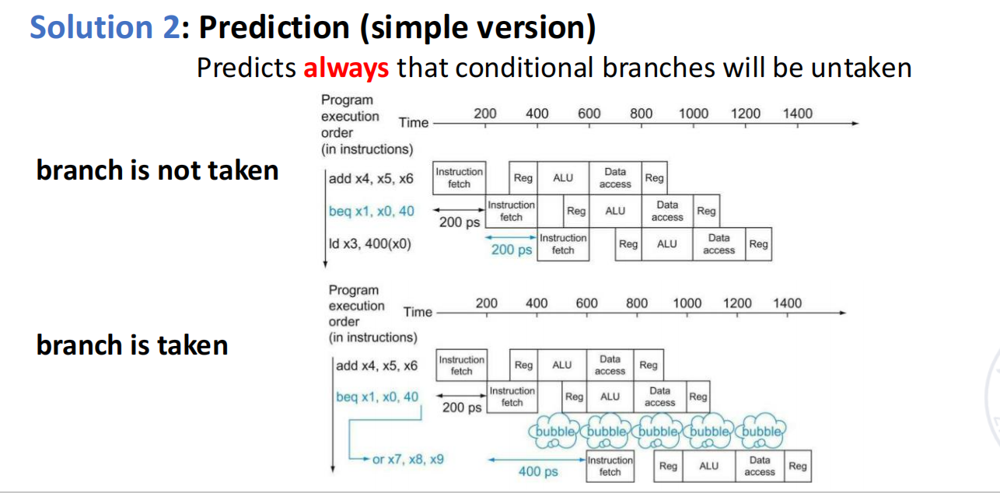
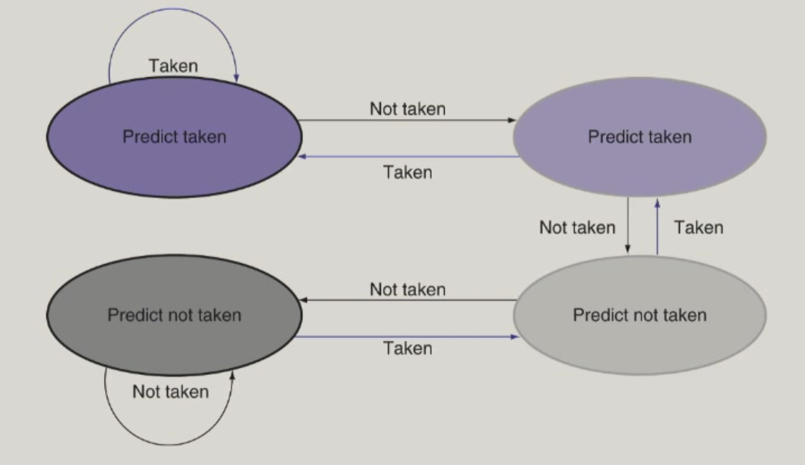
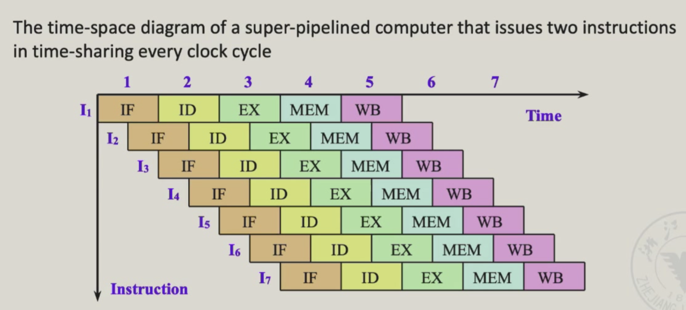

计算机系统II
lec2
Design of pipeline
Overlapping execution
The difference between stages (IF - ID - EX) may cause time consumption or resource competition.
- 一次重叠（partial overlap）：在解码第 k 条指令时开始执行第 k+1 条指令。可以缩短总体耗时，但会使控制逻辑更复杂。
- 二次重叠（further overlap）：在执行第 k 条指令时并行处理第 k+1 条指令。
为了解决内存访问冲突（例如 instruction cache 与 data cache 共享，或指令存储器 imem 与数据存储器 dmem 冲突），可以在主存控制器与指令译码单元之间增加指令缓冲区（instruction buffer）。 缓冲区可以临时存放多条取出的指令，降低取指与访存之间的冲突，从而减少流水线停顿。

buffer在进入与排空的时候一定会存在时间的浪费。
SCPU里并不是所有的指令都会用到五个阶段，于此存在部分浪费。
Classes of pipelining
-
single function
-
multi function
- static:切换功能的时候必须要排空
-
dynamic:同时可以执行两种功能（看看都难）
-
线性流水线：各阶段串联连接且无反馈回路。数据流经每个阶段时，每个阶段最多只能进行一次传输。
-
非线性流水线：除串联连接外，还设有反馈回路。避免产生冲突

An Inplementation of pipelining cpu(risc-v)

understand how pipelined datapath work
load/store instruction
-
store指令也把指令存入寄存器中
-
随着流水线的进行，load指令的返回地址可能已经被后续的指令改写，我们需要把原先pc也要通过中间寄存器进行传递，这样可以保证写回地址的正确性。
那么优化可以得到cpu。

control signals
| 信号名称 | 未断言（0）效果 | 断言（1）效果 |
|---|---|---|
| RegWrite | 不执行任何寄存器写操作 | 将“写数据”写入指令指定的目标寄存器（由 IR 的 rd 字段确定） |
| ALUSrc | ALU 的第二个操作数来自寄存器读数据 2 | ALU 的第二个操作数来自指令的 12 位符号扩展立即数 |
| PCSrc | PC 更新为当前 PC + 4（顺序执行） | PC 更新为分支目标地址（由 EX 阶段 ALU 计算得出） |
| MemRead | 不读取数据内存内容 | 按输入地址读取数据内存，将结果输出到“Read data”端 |
| MemWrite | 不修改数据内存内容 | 按输入地址将“写数据”（来自 Read data 2）写入数据内存 |
| MemtoReg | 寄存器写回数据来自 ALU 输出（ALUOutput） | 寄存器写回数据来自数据内存的读结果（Read data） |

Performance evaluation of pipelining

Throughpu(TP)
一、TP的核心定义与本质
吞吐量（Throughput，简称TP）是衡量流水线性能的核心指标，指单位时间内流水线能够完成的指令或计算任务数量
$$TP = \frac{n}{T}$$
其中，(n) 代表完成的指令（或任务）总数，(T) 代表完成 (n) 个指令（或任务）的总执行时间。
完成 (n) 个指令的总时间由两部分构成,第一句语句的加载（m），和后续（n-1）个语句的运行。
因此，总执行时间公式为：
$$T = (m + n - 1) \times \Delta t_0$$
- 理想流水线的TP公式：将总执行时间代入TP核心公式，可得
$$TP = \frac{n}{(m + n - 1) \times \Delta t_0}$$ - 最大吞吐量（(TP_{max})）：当指令总数 (n \gg m)（指令数远大于流水线阶段数）时，(m) 和 (-1) 可忽略，此时 (TP) 无限接近 (TP_{max})，且 (TP_{max}) 由单阶段时间决定：
$$TP_{max} = \frac{1}{\Delta t_0}$$ - 实际TP与 (TP_{max}) 的关联：通过公式变形可明确两者的比例关系，即
$$TP = \frac{n}{n + m - 1} \times TP_{max}$$
例如，在前文示例中可给出一些常见量化值（仅示例）:
solve pipeline bottleneck
- subdivision
- repetition

Speedup(sp) --加速比
Speedup (Sp) 与效率 (η)
速度加速比： $$ Sp = \frac{n \times m \times \Delta t_0}{(m + n - 1)\times \Delta t_0} = \frac{n\,m}{m + n - 1} $$
流水线效率（每阶段平均利用率）： $$ \eta = \frac{Sp}{m} = \frac{\dfrac{n\,m}{m + n - 1}}{m} = \frac{n}{m + n - 1} $$
当 n \gg m 时，Sp \to m，\eta \to 1（接近理想情况）。

$$T_p = \frac{7}{15}\,\Delta t$$
$$S_p = \frac{4\cdot 3\,\Delta t + 3\cdot 4\,\Delta t}{15\,\Delta t} = 1.6$$
$$\eta = \frac{3\times 4\,\Delta t + 4\times 3\,\Delta t}{5\times 15\,\Delta t} = 32\%$$

lec3
Increasing instruction throughput (并行性)
Hazards of pipelining

stuctural hazard
A required resource is busy.

-
Solution 1: Instructions take it in turns to use resource, some instructions have to stall
-
Solution 2: Add more hardware to machine
data hazards

forwarding
Adding extra hardware to retrieve the missing item early from the internal resources

forwardingpath

forwarding conditions
EX hazard和MEM hazard
| 信号 | 状态 | 操作数来源 | 说明 |
|---|---|---|---|
| ForwardA | 00 | ID/EX寄存器 | 来自寄存器堆的原始值 |
| ForwardA | 10 | EX/MEM寄存器 | 前一条指令的ALU结果（未写回寄存器堆） |
| ForwardA | 01 | MEM/WB寄存器 | 更早指令的结果（内存数据或早期ALU结果） |
| ForwardB | 00 | ID/EX寄存器 | 来自寄存器堆的原始值 |
| ForwardB | 10 | EX/MEM寄存器 | 前一条指令的ALU结果（未写回寄存器堆） |
| ForwardB | 01 | MEM/WB寄存器 | 更早指令的结果（内存数据或早期ALU结果） |
Double Data hazard
add x1,x1,x2
add x1,x1,x3
add x1,x1,x4
Use the most recent data.(在前置条件当中加入判断不是EX hazard)
Load-Use Hazard
lw x1, 0(x2) # MEM阶段末尾才获取x1的值
add x3, x1, x4 # EX阶段需x1，前推无法及时提供
由此我们需要引入stall机制, 再加上forwarding来实现。
Pipelining with stall
- Force control values in ID/EX register 0
- Prevent update of PC and IF/ID register (可以使用软件重排序来避免冲突导致效率浪费) --NOP

control hazards
flow of excution depends on previous instruction.
Problem:THe conditional branch instruction(B/J)
存在forwarding也解决不了的问题（b指令紧邻相关语句的情况）所以我们需要引入stall使之到达可以实现的时候。
Branch hazards

beq的结果我们需要等到运行到第三阶段才能得到，于是我们浪费了3 clock cycles。
How to reduce stall
- in risc-v pipelining
- compare registers and compute target
earlyin the pipelining -
add hardware to do in ID stage
-
key processes in branch instructions
- compute the branch target address
-
judge if the branch success
-
determine outcome to ID stage
- target address adder
- register comparator

‘赌博’

更加高级的版本--预测一部分条件分支不会发生
exp：针对循环底部的条件分支，因为这类分支 “很可能跳转到循环顶部（they are likely to be taken to the top of the loops）”，所以对于更早地址的这类分支，会 “总是预测跳转（always predict taken）”，以此优化流水线执行，减少因控制冒险导致的停顿。

More About -- Reducing Branch Delay
Predict branch taken/untaken

Delay Branch（riscv不用了hh）
分支延迟槽(delay slot)通过强制执行分支后的一条指令，让流水线在分支判断期间保持忙碌，减少因控制冒险造成的性能损失。
Dynamic Branch Prediction
根据当前指令的跳转历史做判别(猜测之类的) - Branch prediction buffer - Indexed by recent branch instruction address - stores outcome - excute branch
Branch History Table(BHT)(FSM)
1-bit Predictor:shortcoming
每错误预测一次就会修改预期状态（外循环和内循环会造成两次的跳转修改）
2-bit

巧妙解决了内循环1000次外循环10000次的矛盾（连续两次跳转不正常才修改状态）
- Branch-Target buffer
- 速度更快
- 提供更多的指令
- Integrated Instruction Fetch Units（可能需要多个周期来取地址）
lec5
Scheduling of NONlinear pipelining
存在回环 存在冲突
Reservationn table

作图得到，需要补充的事（1，5，6，8）是根据同一个部件间隔多少周期可能存在冲突决定的，而冲突向量是把对应位置放置为1得到的 （10110001）

多种情况，以及预期的时钟周期的长度，拉长了时间的发射间隔：

Multiple Issue
Instruction-Level Parallelism（ILP）并行性
- Deeper pipeline
- Multiple issue(4-way multiple-issue)
- dependencies reduce this in practice
Speculation
- Guess what to do with an instruction.
-
Common to static and dynamic multiple issue.(on branch outcome or load)
-
Compiler Speculation:reorder instructions(move load before branch)
-
Hardware Speculation:look ahead for instructions to excute
Superscalar
超标量流水线(1-8)：实则就是一次性发送很多条指令，在不冲突的时候同时进行--引入了更多的硬件来实现多条流水线的并行。按顺序的发射，同时冲突的删除在流出的时候被处理好。
Dual-Issue Risc-v
怎么做？ 1. 按顺序的检测发射的包里面是否存在冲突 2. 检测包和包之间的冲突（data hazard）
发射的时候：1条整型 + 1条浮点型（要求多复用部件）
ALU/Branch 槽 Load/Store 槽
Hazards的处理 EX data hazard - forwarding avoided
LOOP:ld x31,0(x20)
add x31,x31,x21
sd x31,0(x20)
addi x20,x20,-8
blt x22,x20,loop
| cycle | ALU/Branch 槽 | Load/Store 槽 |
|---|---|---|
| 1 | nop | ld x31,0(x20) |
| 2 | add x31,x31,x21 | nop |
| 3 | add x20,x20,-8 | sd x31,0(x20) |
| 4 | blt x22,x20,loop |
IPC = 5/4 = 1.25
VLIM(Very Long Instruction Word)
超长指令字：把多条指令捆绑在了一个指令当中，每n分之一发送一条，共n条

lec4 Software-Hardware Interface
Exceptions and interrupts
Exceptions:unexpected change in flow interrupts:from an external I/O controller
handling exceptions
- save pc of offending instruction(SEPC)
- save indication of the problem(SCAUSE)
what to do? read cause and tansfer to relevant handler determine action required if restartable - take corrective action - use SEPC to return to program otherwive - terminate program - report error using SEPC,SCAUSE
流水线中可能引入乱序完成
Software-Hardware Interface
复习了系统一？讲了下汇编语言和cpu，load program，excute program
Brief introduction of OS
resource allocator